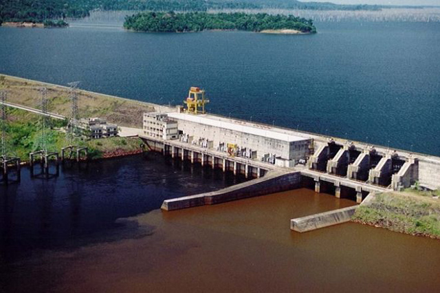

U. H. E. Balbina
A Usina Hidrelétrica de Balbina: Desenvolvimento ou Destruição?
A construção da Usina Hidrelétrica de Balbina, localizada no município de Presidente Figueiredo, no estado do Amazonas, é um marco de uma época em que o Brasil buscava expandir sua infraestrutura energética para sustentar o crescimento urbano e industrial. Inaugurada em 1989, após ser planejada no final da década de 1970, a usina foi concebida para atender à crescente demanda por energia na capital Manaus, cuja população e economia estavam em rápida expansão. Contudo, desde o início, a obra foi envolta em controvérsias, especialmente em relação ao seu impacto ambiental e à sua baixa eficiência energética.
O Contexto da Construção
Durante a década de 1970, o Brasil enfrentava um processo de urbanização acelerada, e a cidade de Manaus, com sua Zona Franca em crescimento, precisava de energia para atender à demanda crescente da indústria e da população. No contexto da época, o governo brasileiro via na construção de usinas hidrelétricas uma solução estratégica para expandir a oferta de energia elétrica, aproveitando o vasto potencial hídrico da região amazônica. A ideia parecia simples: construir uma grande represa, inundar parte da floresta e aproveitar a força da água para gerar eletricidade. Entretanto, a execução desse plano revelou-se extremamente problemática, especialmente em termos ambientais e sociais. A área escolhida para o projeto de Balbina ficava em uma região sensível da floresta amazônica, um dos ecossistemas mais ricos em biodiversidade do mundo. A usina foi projetada para ser capaz de gerar até 250 megawatts (MW) de energia, o que, à primeira vista, parecia ser suficiente para as necessidades de Manaus na época.
O Impacto Ambiental
Um dos maiores problemas de Balbina foi a área inundada para a criação de seu reservatório. Aproximadamente 2.360 km² de floresta amazônica foram alagados para formar o reservatório da usina, o que resultou na destruição de imensos ecossistemas. Essa inundação não apenas afetou a biodiversidade, como também alterou o clima local e regional. A vegetação submersa começou a se decompor, emitindo gases como o metano, um potente gás de efeito estufa, o que transformou a usina em um importante emissor de carbono, contradizendo a ideia de energia limpa e sustentável. Além disso, a grande quantidade de biomassa em decomposição no fundo do reservatório contribuiu para a poluição das águas, prejudicando a fauna aquática.
A Eficiência Energética de Balbina
A grande polêmica em torno de Balbina não se restringe ao impacto ambiental. A eficiência da usina também se tornou alvo de críticas devido ao seu baixo rendimento energético em comparação à imensidão da área alagada. Estudos indicam que, em média, Balbina gera cerca de 112 MW, pouco mais de 40% da sua capacidade instalada, o que é considerado extremamente ineficiente. Para se ter uma ideia, outras usinas de porte semelhante em diferentes regiões do Brasil geram quantidades de energia muito maiores em áreas alagadas significativamente menores. Este baixo rendimento é resultado das características da região amazônica, que possui rios com baixa queda d’água. A força necessária para mover as turbinas hidrelétricas é insuficiente, resultando em uma geração de energia muito aquém do esperado. Além disso, as flutuações no nível do rio Uatumã, no qual o reservatório de Balbina está inserido, também afetam a capacidade de produção da usina, tornando-a ainda mais instável. Em termos de produção de energia em relação à área alagada, Balbina é considerada uma das usinas hidrelétricas menos eficientes do mundo. Este desequilíbrio entre a área alagada e a energia gerada faz com que a usina seja vista como um exemplo de como a infraestrutura energética pode fracassar na tentativa de equilibrar desenvolvimento econômico e preservação ambiental.
Consequências Socioambientais
As consequências da construção de Balbina são sentidas até hoje, tanto no meio ambiente quanto nas comunidades locais. Para os povos indígenas da região, o impacto foi profundo. Os Waimiri-Atroari, por exemplo, viram suas terras ancestrais serem inundadas, o que resultou na perda de recursos vitais, como áreas de caça, pesca e agricultura. Além disso, a construção da usina abriu caminho para o desmatamento e para a invasão de terras por parte de madeireiros e grileiros, gerando mais conflitos e violência contra as populações tradicionais. Do ponto de vista ambiental, Balbina contribuiu para a destruição de habitats e a degradação de ecossistemas únicos. O reservatório criou um ambiente propício à proliferação de doenças como a malária, já que as águas paradas aumentaram a população de mosquitos na região. O desmatamento também trouxe consequências para o clima local, alterando o regime de chuvas e contribuindo para o aumento das temperaturas. Além disso, a decomposição da matéria orgânica submersa emitiu uma grande quantidade de metano, tornando a usina uma fonte de emissões de gases de efeito estufa. Isso contradiz a ideia de que a energia hidrelétrica é uma fonte limpa e renovável, pelo menos no caso de usinas mal planejadas como Balbina.
Reflexões Finais
A Usina Hidrelétrica de Balbina representa um exemplo clássico de como projetos de infraestrutura podem fracassar em conciliar desenvolvimento econômico com sustentabilidade ambiental. A promessa de energia abundante para Manaus foi acompanhada de um custo ambiental e social incalculável, resultando em um projeto que continua a gerar controvérsia mais de três décadas após sua inauguração. A lição que Balbina deixa é clara: o planejamento de projetos energéticos na Amazônia e em outras áreas de grande sensibilidade ambiental deve levar em consideração não apenas a demanda por energia, mas também os impactos de longo prazo no meio ambiente e nas comunidades locais. A Amazônia é uma das regiões mais importantes do mundo em termos de biodiversidade e regulação climática, e intervenções como a de Balbina têm o potencial de causar danos irreversíveis. No final das contas, o legado de Balbina deve servir como um alerta para o futuro. O equilíbrio entre desenvolvimento e preservação é crucial para evitar que novas tragédias socioambientais aconteçam, garantindo que o progresso econômico não venha à custa da destruição da natureza e das comunidades que dela dependem.
